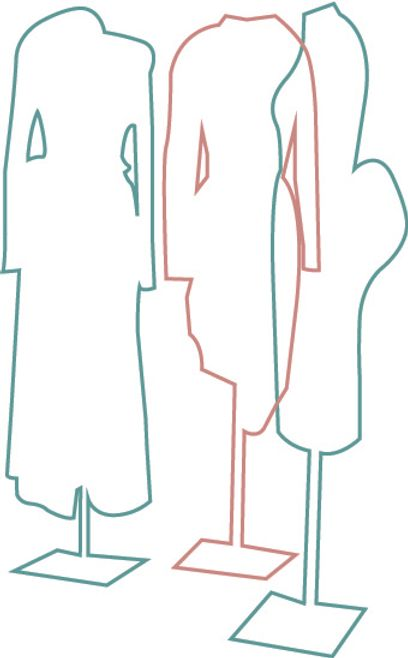

Connor E Milton
Portfolio
Contact
About
Writing
A series of writings on fashion topics written by Connor E Milton
Cancel Culture
Cancel culture and John Galliano's Newspaper dress, Dior 2000

Surrealism and fashion design in the twentieth century
Why surrealism is important to contemporary fashion practice